Análisis Comparativo: Influencia de la Luz Solar en el Frijol
Por: Iker Adrian Marquez Ramos
La germinación es el proceso mágico donde una semilla despierta y se convierte en una nueva planta. Para que esto pase, necesita agua, aire y buena temperatura. En este experimento, vamos a observar cómo la cantidad de luz del sol afecta la rapidez con la que crece nuestro frijolito y cómo se desarrollan sus primeras raíces y hojitas.
El propósito es ver, anotar y tomar fotos de cómo cambian y crecen las plantitas de frijol cuando las ponemos en tres lugares diferentes: directo en el sol, en un lugar con sombra y escondidas adentro de la casa sin luz del sol.
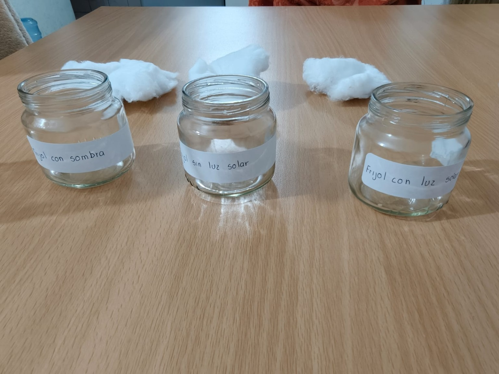
La planta creció súper fuerte y sana. El frijolito se abrió rápido y le salió una raíz gruesa. Sus primeras hojitas y el tallo se ven de un color verde muy bonito y brillante gracias a que recibió mucha luz del sol.
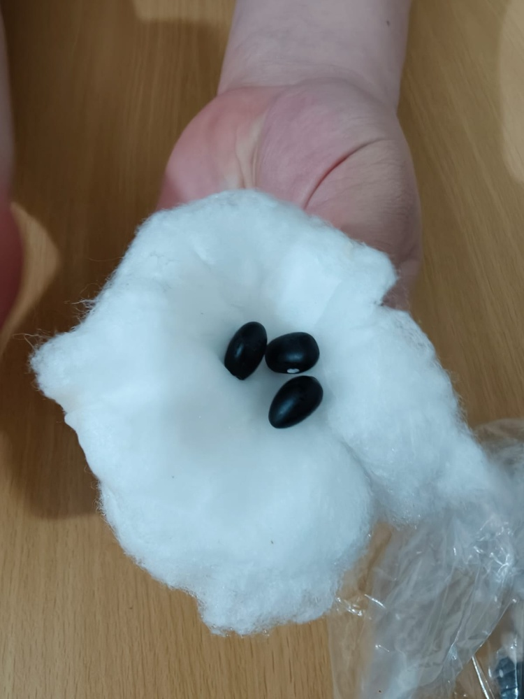
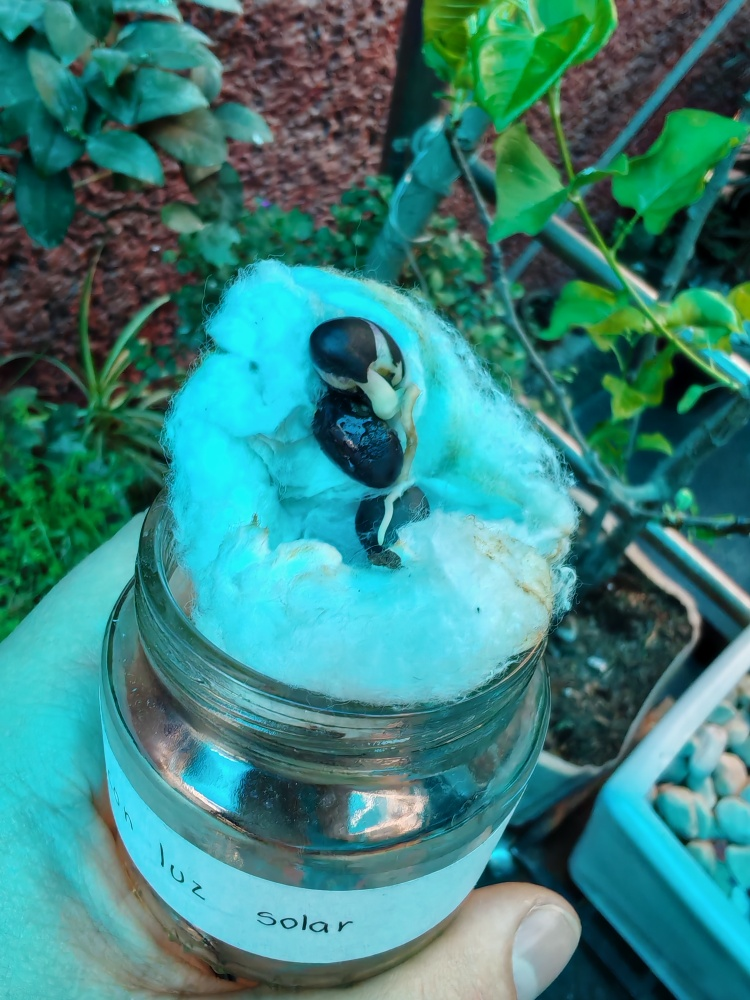
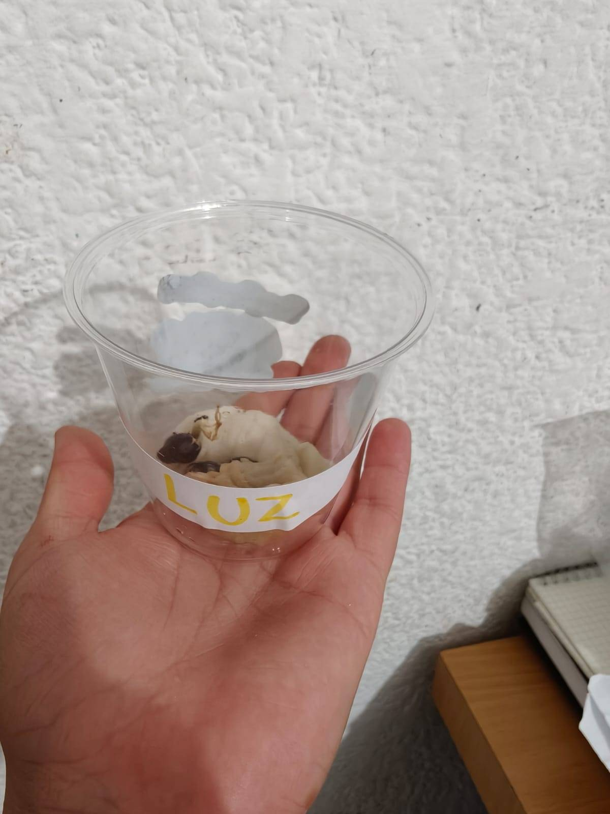
La plantita sí creció, pero un poco más lento. El tallo se estiró bastante pero está más delgadito que el del frijol que estuvo en el sol. Además, tardó un día entero más en empezar a salir la raíz.
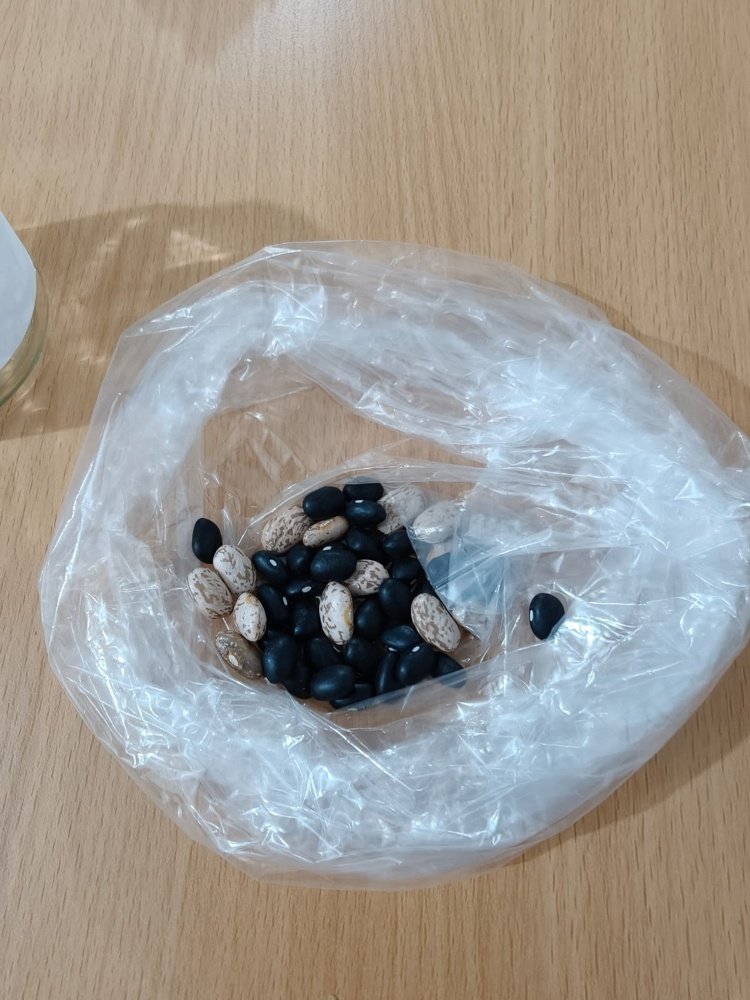
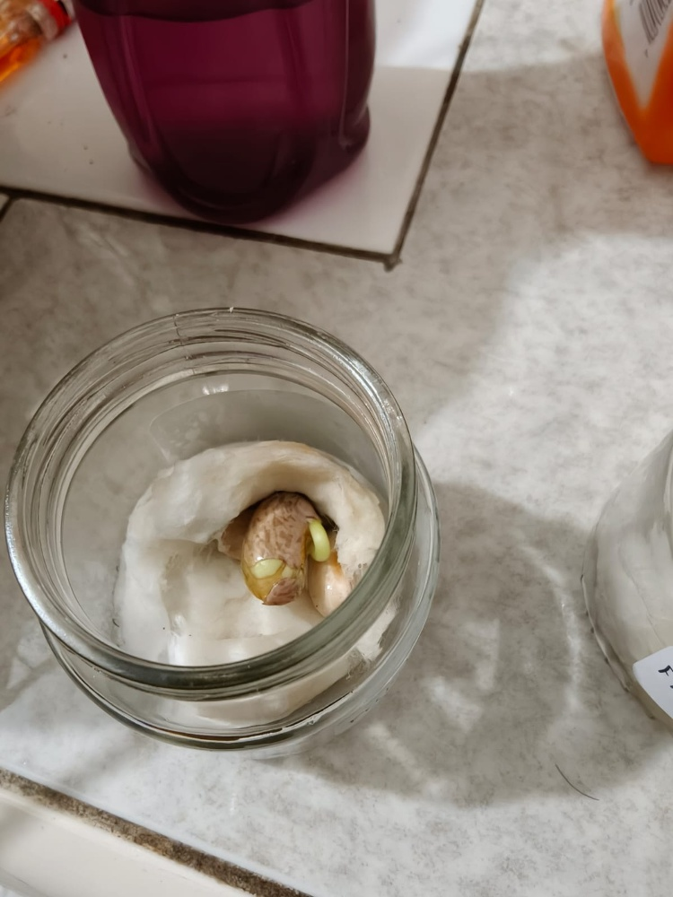
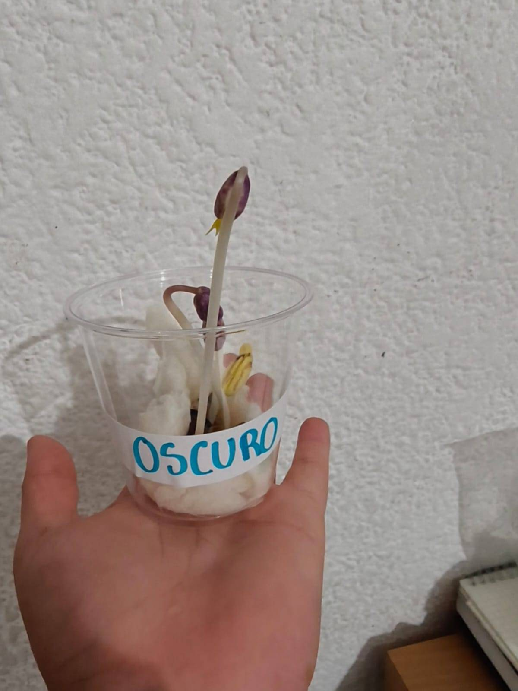
La planta se estiró muchísimo y muy rápido porque estaba buscando desesperada un poco de luz. Los brotes salieron de un color casi blanco o muy amarillitos, se ven muy débiles y se pueden romper fácil. Además, casi no creció su raíz.
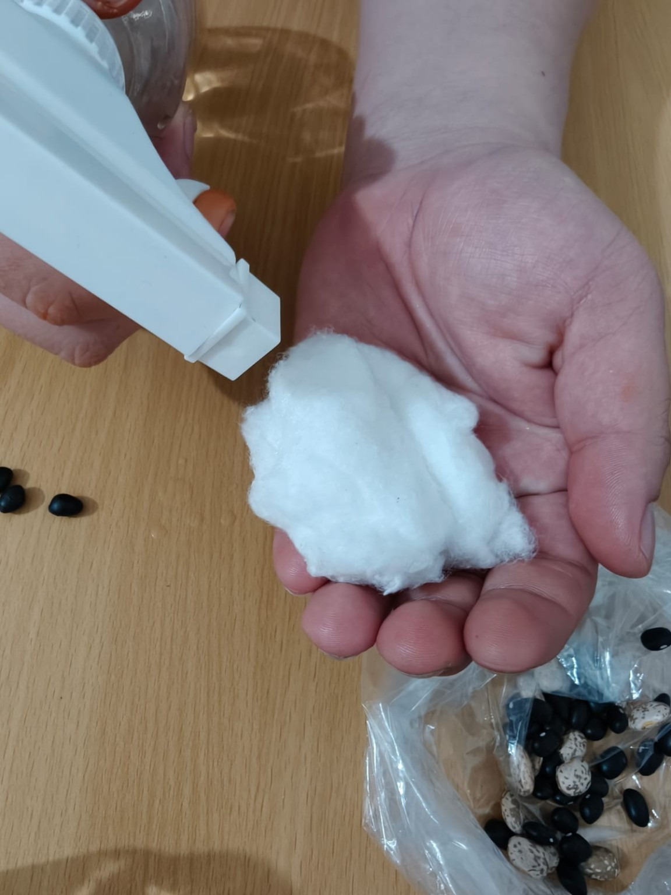
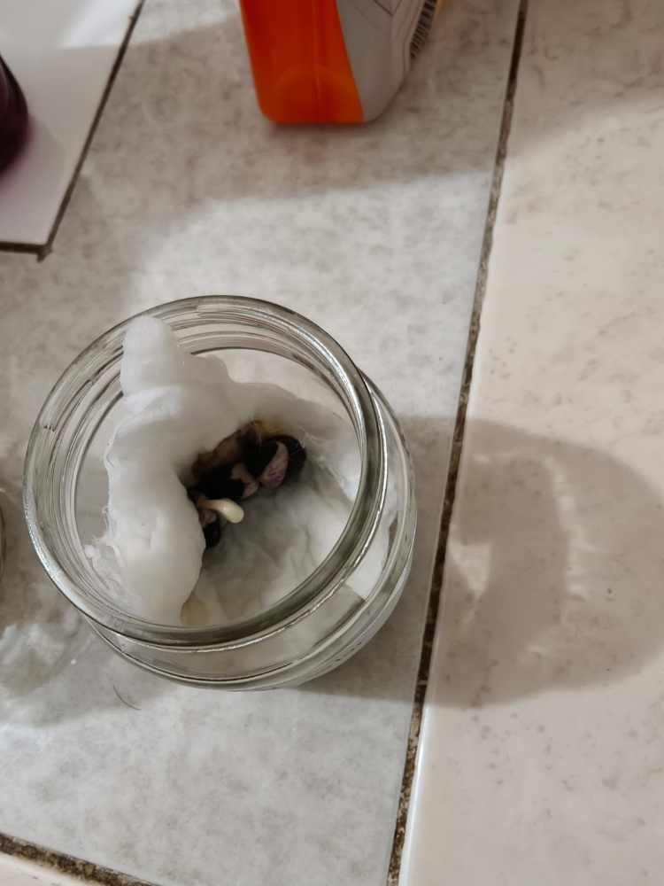
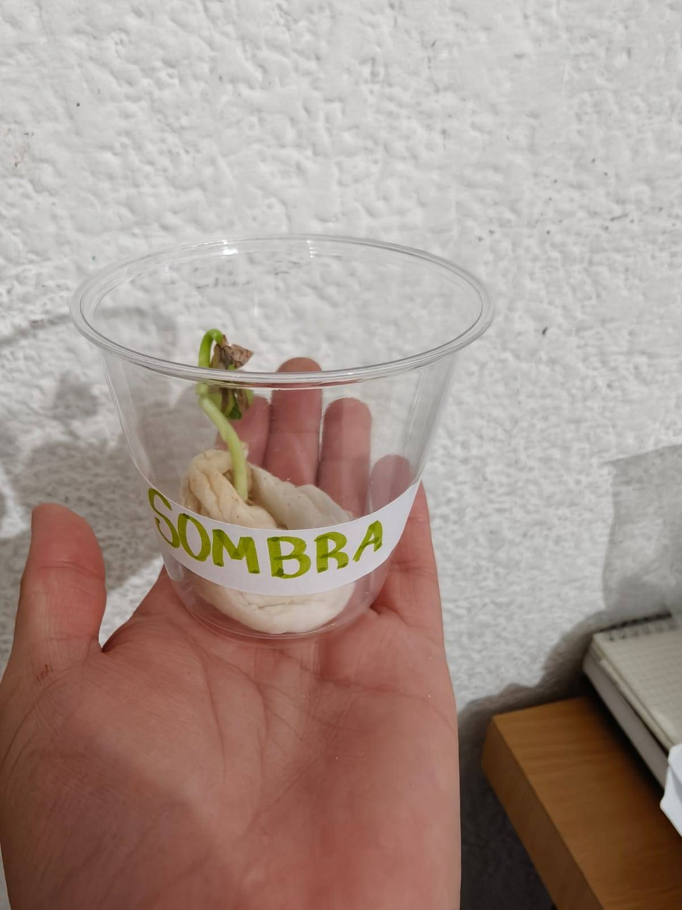
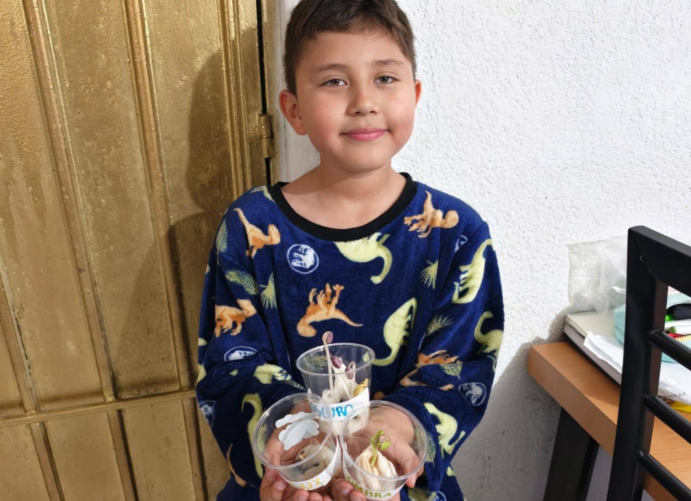
Después de este experimento, me di cuenta de que aunque el frijol necesita agua para despertar, la luz del sol es lo más importante para que crezca fuerte y de un color verde sano. El frijol que estuvo en el sol se vio mucho más grande, fuerte y vivo que el que dejamos a oscuras.